IO模型与零拷贝
本文最后更新于：1 小时前
本节内容主要用于理解Linux的I/O模型，以便更好地理解Nginx架构。
I/O的定义
I/O在计算机中指Input/Output， IOPS (Input/Output Per Second)即每秒的输入输出量(或读写次数)，是衡量磁盘性能的主要指标之一。IOPS是指单位时间内系统能处理的I/O请求数量，一般以每秒处理的I/O请求数量为单位，I/O请求通常为读或写数据操作请求。
一次完整的I/O是用户空间的进程数据与内核空间的内核数据的报文的完整交换，但是由于内核空间与用户空间是严格隔离的，所以其数据交换过程中不能由用户空间的进程直接调用内核空间的内存数据，而是需要经历一次从内核空间中的内存数据copy到用户空间的进程内存当中，所以简单说I/O就是把数据从内核空间中的内存数据复制到用户空间中进程的内存当中。
Linux 的 I/O
- 磁盘I/O
- 网络I/O : 一切皆文件,本质为对socket文件的读写
磁盘 I/O
磁盘I/O是进程向内核发起系统调用，请求磁盘上的某个资源比如是html 文件或者图片，然后内核通过相应的驱动程序将目标文件加载到内核的内存空间，加载完成之后把数据从内核内存（内核空间）再复制给进程内存（用户空间），如果是比较大的数据也需要等待一定时间。
机械磁盘的寻道时间、旋转延迟和数据传输时间：
寻道时间：是指磁头移动到正确的磁道上所花费的时间，寻道时间越短则I/O处理就越快，目前磁盘的寻道时间一般在3-15毫秒左
右。
旋转延迟：是指将磁盘片旋转到数据所在的扇区到磁头下面所花费的时间，旋转延迟取决于磁盘的转速，通常使用磁盘旋转一周所
需要时间的1/2之一表示，比如7200转的磁盘平均训传延迟大约为60*1000/7200/2=4.17毫秒，公式的意思为 （每分钟60秒*1000毫秒每秒/7200转每分/2），如果是15000转的则为60*1000/15000/2=2毫秒。
数据传输时间：指的是读取到数据后传输数据的时间，主要取决于传输速率，这个值等于数据大小除以传输速率，目前的磁盘接口
每秒的传输速度可以达到600MB，因此可以忽略不计。
常见的机械磁盘平均寻道时间值：
7200转/分的磁盘平均物理寻道时间：9毫秒
10000转/分的磁盘平均物理寻道时间：6毫秒
15000转/分的磁盘平均物理寻道时间：4毫秒
常见磁盘的平均延迟时间：
7200转的机械盘平均延迟：60*1000/7200/2 = 4.17ms
10000转的机械盘平均延迟：60*1000/10000/2 = 3ms
15000转的机械盘平均延迟：60*1000/15000/2 = 2ms
每秒最大IOPS的计算方法：
7200转的磁盘IOPS计算方式：1000毫秒/(9毫秒的寻道时间+4.17毫秒的平均旋转延迟时间)=1000/13.13=75.9 IOPS
10000转的磁盘的IOPS计算方式：1000毫秒/(6毫秒的寻道时间+3毫秒的平均旋转延迟时间)=1000/9=111IOPS
15000转的磁盘的IOPS计算方式：15000毫秒/(4毫秒的寻道时间+2毫秒的平均旋转延迟时间)=1000/6=166.6 IOPS网络 I/O
网络协议栈到用户空间进程的IO就是网络IO
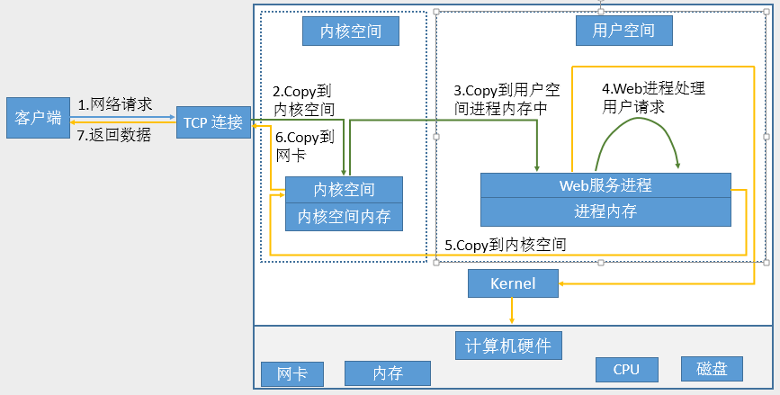
网络I/O处理过程
获取请求数据，客户端与服务器建立连接发出请求，服务器接受请求（1-3）
构建响应，当服务器接收完请求，并在用户空间处理客户端的请求，直到构建响应完成（4）
返回数据，服务器将已构建好的响应再通过内核空间的网络 I/O 返回给客户端（5-7）每次I/O都要经历的两个阶段
第一步：将数据从文件先加载至内核内存空间（缓冲区），等待数据准备完成，时间较长（网络数据拷贝）
第二步：将数据从内核缓冲区复制到用户空间的进程的内存中，时间较短（内存数据拷贝）I/O 模型
I/O模型相关概念
同步/异步：关注的是消息通信机制，即调用者在等待一件事情的处理结果时，被调用者是否提供完成状态的通知。
- 同步：synchronous，被调用者并不提供事件的处理结果相关的通知消息，需要调用者主动询问事情是否处理完成
- 异步：asynchronous，被调用者通过状态、通知或回调机制主动通知调用者被调用者的运行状态
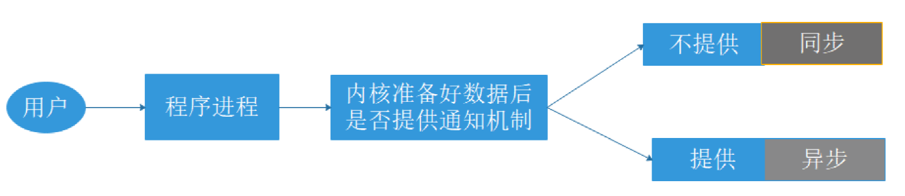
阻塞/非阻塞：关注调用者在等待结果返回之前所处的状态
- 阻塞：blocking，指IO操作需要彻底完成后才返回到用户空间，调用结果返回之前，调用者被挂起，干不了别的事情。
- 非阻塞：nonblocking，指IO操作被调用后立即返回给用户一个状态值，而无需等到IO操作彻底完成，在最终的调用结果返回之前，调用者不会被挂起，可以去做别的事情。
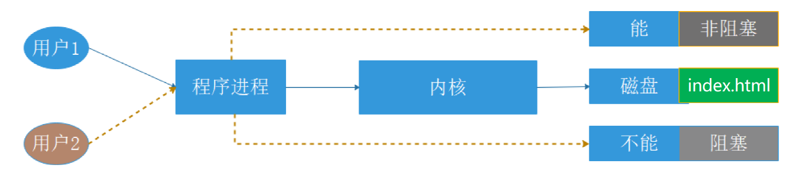
网络 I/O 模型
阻塞型、非阻塞型、复用型、信号驱动型、异步
阻塞型 I/O 模型（blocking IO）
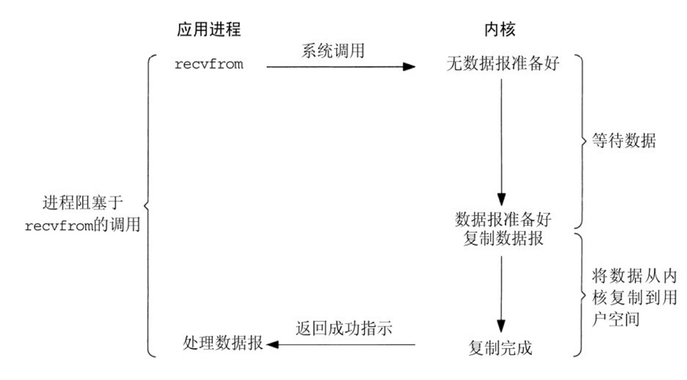
阻塞IO模型是最简单的I/O模型，用户线程在内核进行IO操作时被阻塞。
用户线程通过系统调用read发起I/O读操作，由用户空间转到内核空间。内核等到数据包到达后，然后将接收的数据拷贝到用户空间，完成read操作。
用户需要等待read将数据读取到buffer后，才继续处理接收的数据。整个I/O请求的过程中，用户线程是被阻塞的，这导致用户在发起IO请求时，不能做任何事情，对CPU的资源利用率不够。
优点：程序简单，在阻塞等待数据期间进程/线程挂起，基本不会占用 CPU 资源。
缺点：每个连接需要独立的进程/线程单独处理，当并发请求量大时为了维护程序，内存、线程切换开销较大。
同步阻塞：程序向内核发送I/O请求后一直等待内核响应，如果内核处理请求的IO操作不能立即返回, 则进程将一直等待并不再接受新的请求，并由进程轮询查看I/O是否完成，完成后进程将I/O结果返回给Client，在IO没有返回期间进程不能接受其他客户的请求，而且是由进程自己去查看I/O是否完成，这种方式简单，但是比较慢，用的比较少。非阻塞 I/O 模型（nonblocking IO）
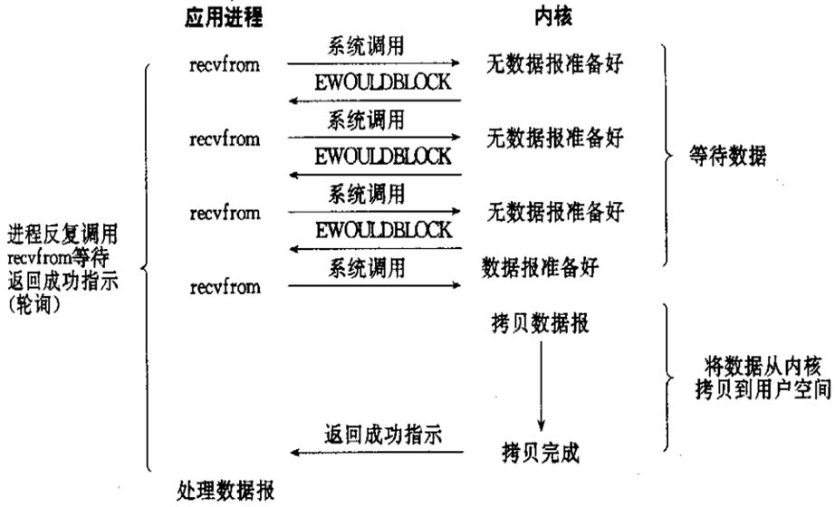
用户线程发起IO请求时立即返回。但并未读取到任何数据，用户线程需要不断地发起IO请求，直到数据到达后，才真正读取到数据，继续执行。即 “轮询”机制存在两个问题：如果有大量文件描述符都要等，那么就得一个一个read。这会带来大量的Context Switch（read是系统调用，每调用一次就得在用户态和核心态切换一次）。轮询的时间不好把握。这里需要估计数据需要多久之后才能准备好。等待时间设的太长，程序响应延迟就过大; 设的太短，就会造成过于频繁的重试，干耗CPU而已，是比较浪费CPU的方式，一般很少直接使用这种模型，而是在其他IO模型中使用非阻塞IO这一特性。
非阻塞：程序向内核发送请I/O求后一直等待内核响应，如果内核处理请求的IO操作不能立即返回IO结果，进程将不再等待，而是继续处理其他请求，但是仍然需要进程隔一段时间就要查看内核I/O是否完成。由上图可知，在设置连接为非阻塞时，当应用进程系统调用 recvfrom 没有数据返回时，内核会立即返回一个 EWOULDBLOCK 错误，而不会一直阻塞到数据准备好。如上图在第四次调用时有一个数据报准备好了，所以这时数据会被复制到应用进程缓冲区 ，于是 recvfrom 成功返回数据。
当一个应用进程这样循环调用 recvfrom 时，称之为轮询 polling 。这么做往往会耗费大量CPU时间，这种模型实际很少被使用。
多路复用 I/O 模 型（ I/O multiplexing ）
上面的模型中, 每一个文件描述符对应的IO均由一个线程监控和处理（有多少文件描述符就要生成多少个线程）
多路复用IO指一个线程可以同时（实际是交替实现，即并发完成）监控和处理多个文件描述符对应各自的IO，即复用同一个线程
一个线程之所以能实现同时处理多个IO, 是因为这个线程调用了内核中的SELECT, POLL或EPOLL等系统调用，从而实现多路复用IO
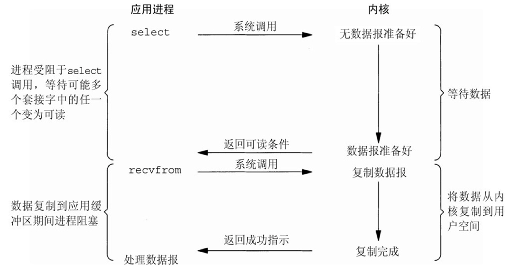
I/O multiplexing 主要包括:select，poll，epoll三种系统调用，select/poll/epoll的好处就在于单个process（进程）就可以同时处理多个网络连接的IO。
它的基本原理就是select/poll/epoll这个function会不断的轮询所负责的所有socket，当某个socket有数据到达了，就通知用户进程。
当用户进程调用了select，那么整个进程会被block，而同时，kernel会“监视”所有select负责的socket，当任何一个socket中的数据准备好了，select就会返回。这个时候用户进程再调用read操作，将数据从kernel拷贝到用户进程。
IO多路复用（IO Multiplexing) ：是一种机制，程序注册一组socket文件描述符给操作系统，表示“我要监视这些fd是否有IO事件发生，有了就告诉程序处理”；
IO多路复用一般和NIO（nonblocking IO）一起使用的。NIO和IO多路复用是相对独立的。NIO仅仅是指IO API总是能立刻返回，不会被Blocking; 而IO多路复用仅仅是操作系统提供的一种便利的通知机制。操作系统并不会强制这俩必须得一起用，可以只用IO多路复用 + BIO（blocking IO），这时还是当前线程被卡住。IO多路复用和NIO是要配合一起使用才有实际意义；
IO多路复用是指内核一旦发现进程指定的一个或者多个IO条件准备就绪，就通知该进程；
多个连接共用一个等待机制，本模型会阻塞进程，但是进程是阻塞在select或者poll这两个系统调用上，而不是阻塞在真正的IO操作上；
用户首先将需要进行IO操作添加到select中，同时等待select系统调用返回。当数据到达时，IO被激活，select函数返回。用户线程正式发起read请求，读取数据并继续执行；
从流程上来看，使用select函数进行IO请求和同步阻塞模型没有太大的区别，甚至还多了添加监视IO，以及调用select函数的额外操作，效率更差。并且阻塞了两次，但是第一次阻塞在select上时，select可以监控多个IO上是否已有IO操作准备就绪，即可达到在同一个线程内同时处理多个IO请求的目的。而不像阻塞IO那种，一次只能监控一个IO；
虽然上述方式允许单线程内处理多个IO请求，但是每个IO请求的过程还是阻塞的（在select函数上阻塞），平均时间甚至比同步阻塞IO模型还要长。如果用户线程只是注册自己需要的IO请求，然后去做自己的事情，等到数据到来时再进行处理，则可以提高CPU的利用率；
IO多路复用是最常使用的IO模型，但是其异步程度还不够“彻底”，因它使用了会阻塞线程的select系统调用。因此IO多路复用只能称为异步阻塞IO模型，而非真正的异步IO；优缺点
- 优点：可以基于一个阻塞对象，同时在多个描述符上等待就绪，而不是使用多个线程(每个文件描述符一个线程)，这样可以大大节省系统资源
- 缺点：当连接数较少时效率相比多线程+阻塞 I/O 模型效率较低，可能延迟更大，因为单个连接处理需要 2 次系统调用（select和recvfrom），占用时间会有增加
IO多路复用适用如下场合：
- 当客户端处理多个描述符时（一般是交互式输入和网络套接口），必须使用I/O复用
- 当一个客户端同时处理多个套接字时，此情况可能的但很少出现
- 当一个服务器既要处理监听套接字，又要处理已连接套接字，一般也要用到I/O复用
- 当一个服务器即要处理TCP，又要处理UDP，一般要使用I/O复用
- 当一个服务器要处理多个服务或多个协议，一般要使用I/O复用
信号驱动式 I/O 模型（signal-driven IO）
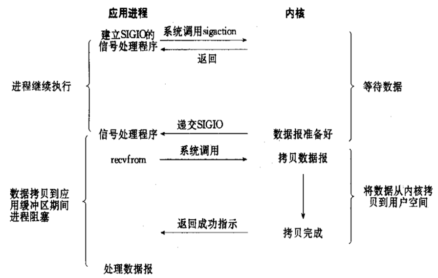
信号驱动I/O的意思就是进程现在不用傻等着，也不用去轮询。而是让内核在数据就绪时，发送信号通知进程。
调用的步骤是，通过系统调用 sigaction ，并注册一个信号处理的回调函数，该调用会立即返回，然后主程序可以继续向下执行，当有I/O操作准备就绪,即内核数据就绪时，内核会为该进程产生一个 SIGIO信号，并回调注册的信号回调函数，这样就可以在信号回调函数中系统调用 recvfrom 获取数据,将用户进程所需要的数据从内核空间拷贝到用户空间。此模型的优势在于等待数据报到达期间进程不被阻塞。用户主程序可以继续执行，只要等待来自信号处理函数的通知。
在信号驱动式 I/O 模型中，应用程序使用套接口进行信号驱动 I/O，并注册一个信号处理函数，进程继续运行并不阻塞，当数据准备好时，进程会收到一个 SIGIO 信号，可以在信号处理函数中调用 I/O 操作函数处理数据。
优点：线程并没有在等待数据时被阻塞，内核直接返回调用接收信号，不影响进程继续处理其他请求因此可以提高资源的利用率。
缺点：信号 I/O 在大量 IO 操作时可能会因为信号队列溢出导致没法通知。
异步阻塞：程序进程向内核发送IO调用后，不用等待内核响应，可以继续接受其他请求，内核收到进程请求后进行的IO如果不能立即返回，就由内核等待结果，直到IO完成后内核再通知进程。异步 I/O 模型（ asynchronous IO ）
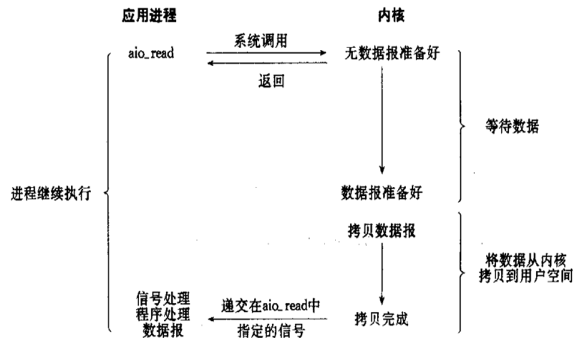
异步I/O 与 信号驱动I/O最大区别在于，信号驱动是内核通知用户进程何时开始一个I/O操作，而异步I/O是由内核通知用户进程I/O操作何时完成，两者有本质区别在于异步IO相当于不用去饭店场吃饭，直接点个外卖，把等待上菜的时间也给省了。
相对于同步I/O，异步I/O不是顺序执行。用户进程进行aio_read系统调用之后，无论内核数据是否准备好，都会直接返回给用户进程，然后用户态进程可以去做别的事情。等到socket数据准备好了，内核直接复制数据给进程，然后从内核向进程发送通知。IO两个阶段，进程都是非阻塞的。
信号驱动IO当内核通知触发信号处理程序时，信号处理程序还需要阻塞在从内核空间缓冲区拷贝数据到用户空间缓冲区这个阶段，而异步IO直接是在第二个阶段完成后，内核直接通知用户线程可以进行后续操作了
优点：异步 I/O 能够充分利用 DMA 特性，让 I/O 操作与计算重叠
缺点：要实现真正的异步 I/O，操作系统需要做大量的工作。目前 Windows 下通过 IOCP 实现了真正的异步 I/O，在 Linux 系统下，Linux 2.6才引入，目前 AIO 并不完善，因此在 Linux 下实现高并发网络编程时以 IO 复用模型模式+多线程任务的架构基本可以满足需求
Linux提供了AIO库函数实现异步，但是用的很少。目前有很多开源的异步IO库，例如libevent、libev、libuv。
异步非阻塞：程序进程向内核发送IO调用后，不用等待内核响应，可以继续接受其他请求，内核调用的IO如果不能立即返回，内核会继续处理其他事物，直到IO完成后将结果通知给内核，内核在将IO完成的结果返回给进程，期间进程可以接受新的请求，内核也可以处理新的事物，因此相互不影响，可以实现较大的同时并实现较高的IO复用，因此异步非阻塞是使用最多的一种通信方式。五种 IO 对比
这五种 I/O 模型中，越往后，阻塞越少，理论上效率也是最优前四种属于同步 I/O，因为其中真正的 I/O 操作(recvfrom)将阻塞进程/线程，只有异步 I/O 模型才与 POSIX 定义的异步 I/O 相匹配。
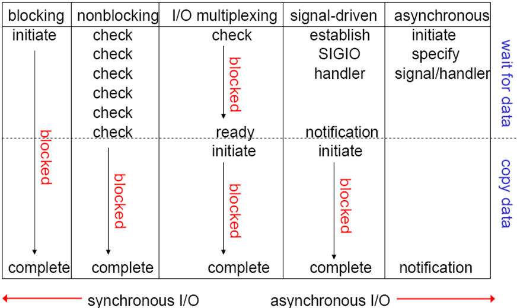
I/O 的具体实现方式
I/O 常见实现
Nginx支持在多种不同的操作系统实现不同的事件驱动模型，但是其在不同的操作系统甚至是不同的系统版本上面的实现方式不尽相同，主要有以下实现方式：
1、select：
select库是在linux和windows平台都基本支持的 事件驱动模型库，并且在接口的定义也基本相同，只是部分参数的含义略有差异，最大并发限制1024，是最早期的事件驱动模型。
2、poll： 在Linux 的基本驱动模型，windows不支持此驱动模型，是select的升级版，取消了最大的并发限制，在编译nginx的时候可以使用--with-poll_module和--without-poll_module这两个指定是否编译select库。
3、epoll：
epoll是库是Nginx服务器支持的最高性能的事件驱动库之一，是公认的非常优秀的事件驱动模型，它和select和poll有很大的区别，epoll是poll的升级版，但是与poll有很大的区别.
epoll的处理方式是创建一个待处理的事件列表，然后把这个列表发给内核，返回的时候在去轮训检查这个表，以判断事件是否发生，epoll支持一个进程打开的最大事件描述符的上限是系统可以打开的文件的最大数，同时epoll库的I/O效率不随描述符数目增加而线性下降，因为它只会对内核上报的“活跃”的描述符进行操作。
4、kqueue：
用于支持BSD系列平台的高校事件驱动模型，主要用在FreeBSD 4.1及以上版本、OpenBSD 2.0级以上版本，NetBSD级以上版本及Mac OS X 平台上，该模型也是poll库的变种，因此和epoll没有本质上的区别，都是通过避免轮训操作提供效率。
5、Iocp：
Windows系统上的实现方式，对应第5种（异步I/O）模型。
6、rtsig：
不是一个常用事件驱动，最大队列1024，不是很常用
7、/dev/poll:
用于支持unix衍生平台的高效事件驱动模型，主要在Solaris 平台、HP/UX，该模型是sun公司在开发Solaris系列平台的时候提出的用于完成事件驱动机制的方案，它使用了虚拟的/dev/poll设备，开发人员将要见识的文件描述符加入这个设备，然后通过ioctl()调用来获取事件通知，因此运行在以上系列平台的时候请使用/dev/poll事件驱动机制。
8、eventport：
该方案也是sun公司在开发Solaris的时候提出的事件驱动库，只是Solaris 10以上的版本，该驱动库看防止内核崩溃等情况的发生。常用 I/O 模型比较
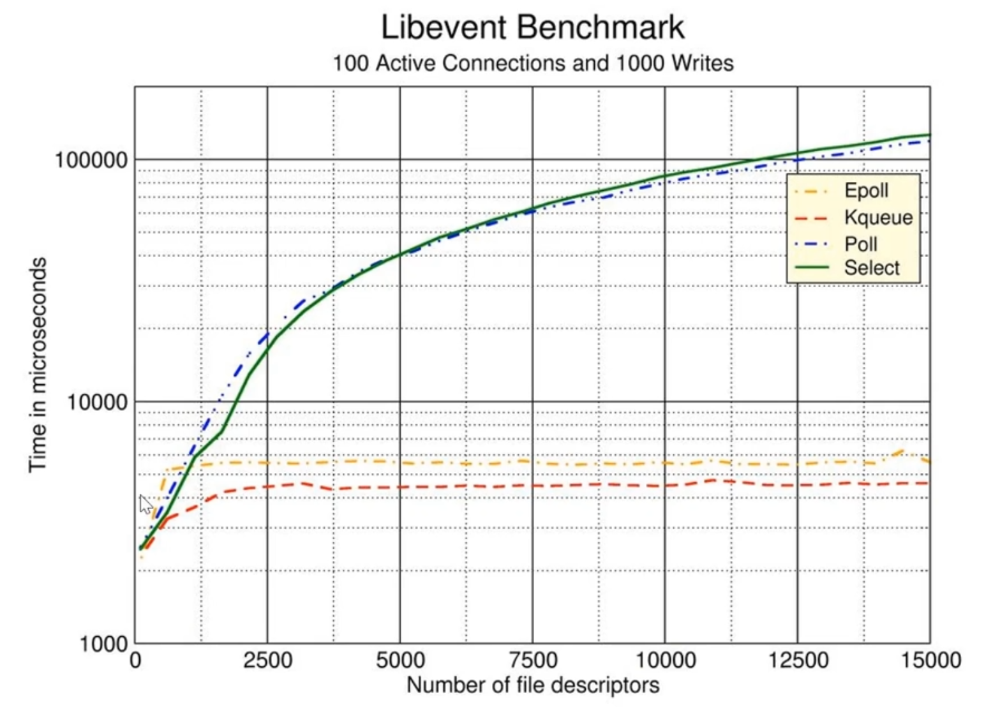
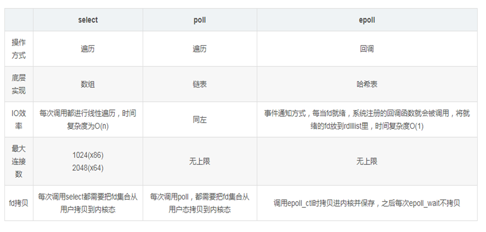
Select：
POSIX所规定，目前几乎在所有的平台上支持，其良好跨平台支持也是它的一个优点，本质上是通过设置或者检查存放fd标志位的数据结构来进行下一步处理。
缺点：
单个进程能够监视的文件描述符的数量存在最大限制，在Linux上一般为1024，可以通过修改宏定义FD_SETSIZE，再重新编译内核实现，但是这样也会造成效率的降低
单个进程可监视的fd数量被限制，默认是1024，修改此值需要重新编译内核
对socket是线性扫描，即采用轮询的方法，效率较低
select 采取了内存拷贝方法来实现内核将 FD 消息通知给用户空间，这样一个用来存放大量fd的数据结构，这样会使得用户空间和内核空间在传递该结构时复制开销大poll：
本质上和select没有区别，它将用户传入的数组拷贝到内核空间，然后查询每个fd对应的设备状态
其没有最大连接数的限制，原因是它是基于链表来存储的
大量的fd的数组被整体复制于用户态和内核地址空间之间，而不管这样的复制是不是有意义
poll特点是“水平触发”，如果报告了fd后，没有被处理，那么下次poll时会再次报告该fd
select是边缘触发即只通知一次epoll： 在Linux 2.6内核中提出的select和poll的增强版本
支持水平触发LT和边缘触发ET，最大的特点在于边缘触发，它只告诉进程哪些fd刚刚变为就绪态，并且只会通知一次
使用“事件”的就绪通知方式，通过epoll_ctl注册fd，一旦该fd就绪，内核就会采用类似callback的回调机制来激活该fd，epoll_wait便可以收到通知
优点:
没有最大并发连接的限制：能打开的FD的上限远大于1024(1G的内存能监听约10万个端口)，具体查看/proc/sys/fs/file-max，此值和系统内存大小相关
效率提升：非轮询的方式，不会随着FD数目的增加而效率下降;只有活跃可用的FD才会调用callback函数，即epoll最大的优点就在于它只管理“活跃”的连接，而跟连接总数无关
内存拷贝，利用mmap(Memory Mapping)加速与内核空间的消息传递;即epoll使用mmap减少复制开销总结
1、epoll只是一组API，比起select这种扫描全部的文件描述符，epoll只读取就绪的文件描述符，再加入基于事件的就绪通知机制，所以性能比较好
2、基于epoll的事件多路复用减少了进程间切换的次数，使得操作系统少做了相对于用户任务来说的无用功。
3、epoll比select等多路复用方式来说，减少了遍历循环及内存拷贝的工作量，因为活跃连接只占总并发连接的很小一部分。范例：最大并发连接数和内存有直接关系
#内存1G
[root@centos8 ~]#free -h
total used free shared buff/cache available
Mem: 952Mi 168Mi 605Mi 12Mi 178Mi 629Mi
Swap: 2.0Gi 0B 2.0Gi
[root@centos8 ~]#cat /proc/sys/fs/file-max
92953
#内存2G
[root@centos8 ~]#free -h
total used free shared buff/cache available
Mem: 1.9Gi 258Mi 1.3Gi 12Mi 341Mi 1.6Gi
Swap: 2.0Gi 0B 2.0Gi
[root@centos8 ~]#cat /proc/sys/fs/file-max
195920范例：内核限制
[root@centos8 ~]#grep -R FD_SETSIZE linux-5.8/*
linux-5.8/Documentation/userspace-api/media/v4l/func-select.rst:
``FD_SETSIZE``.
linux-5.8/include/uapi/linux/posix_types.h:#undef __FD_SETSIZE
linux-5.8/include/uapi/linux/posix_types.h:#define __FD_SETSIZE 1024 #单个进程能够
监视的文件描述符的文件最大数量
linux-5.8/include/uapi/linux/posix_types.h: unsigned long fds_bits[__FD_SETSIZE
/ (8 * sizeof(long))];
linux-5.8/tools/include/nolibc/nolibc.h:#define FD_SETSIZE 256
linux-5.8/tools/include/nolibc/nolibc.h:typedef struct { uint32_t
fd32[FD_SETSIZE/32]; } fd_set;
linux-5.8/tools/include/nolibc/nolibc.h: if (fd < 0 || fd >= FD_SETSIZE)
linux-5.8/tools/testing/selftests/net/nettest.c: rc = select(FD_SETSIZE,
NULL, &wfd, NULL, tv);范例：select 和 epoll 帮助
[root@centos8 ~]#whatis epoll
epoll (7) - I/O event notification facility
[root@centos8 ~]#whatis select
select (2) - synchronous I/O multiplexing
select (3) - synchronous I/O multiplexing
select (3p) - synchronous I/O multiplexing
[root@centos8 ~]#whatis poll
poll (2) - wait for some event on a file descriptor
poll (3p) - input/output multiplexing
[root@centos8 ~]#man 2 select
SELECT(2) Linux Programmer's
Manual SELECT(2)
NAME
select, pselect, FD_CLR, FD_ISSET, FD_SET, FD_ZERO - synchronous I/O
multiplexing
[root@centos8 ~]#man 2 poll
POLL(2) Linux Programmer's
Manual POLL(2)
NAME
poll, ppoll - wait for some event on a file descriptor零拷贝
零拷贝介绍
传统 Linux 的I/O 问题
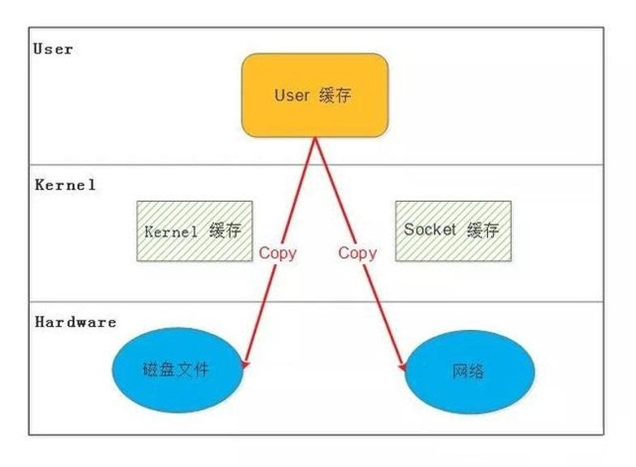
传统的 Linux 系统的标准 I/O 接口（read、write）是基于数据拷贝的，也就是数据都是 copy_to_user 或者 copy_from_user，这样做的好处是，通过中间缓存的机制，减少磁盘 I/O 的操作，但是坏处也很明显，大量数据的拷贝，用户态和内核态的频繁切换，会消耗大量的 CPU 资源，严重影响数据传输的性能，统计表明，在Linux协议栈中，数据包在内核态和用户态之间的拷贝所用的时间甚至占到了数据包整个处理流程时间的57.1%
以上图为例，一次完整的网络请求涉及IO数据流向为：网络协议栈 –> 内核空间 –> 用户空间 –> 内核空间 – > 磁盘– > 内核空间– > 用户空间– > 内核空间– > 网络协议栈。可观察到一次IO过程，数据被拷贝了多次。
什么是零拷贝
零拷贝就是上述问题的一个解决方案，通过尽量避免拷贝操作来缓解 CPU 的压力。零拷贝并没有真正做
到“0”拷贝，它更多是一种思想，很多的零拷贝技术都是基于这个思想去做的优化
零拷贝相关技术
MMAP ( Memory Mapping )
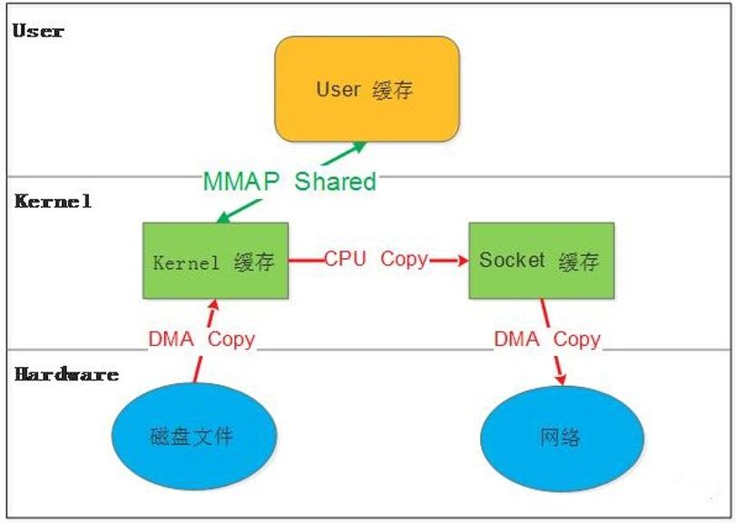
mmap()系统调用使得进程之间通过映射同一个普通文件实现共享内存。普通文件被映射到进程地址空间后，进程可以向访问普通内存一样对文件进行访问。
mmap是一种内存映射文件的方法，即将一个文件或者其它对象映射到进程的地址空间，实现文件磁盘地址和进程虚拟地址空间中一段虚拟地址的一一对映关系。
实现这样的映射关系后，进程就可以采用指针的方式读写操作这一段内存，而系统会自动回写脏页面到对应的文件磁盘上，即完成了对文件的操作而不必再调用read,write等系统调用函数。相反，内核空间对这段区域的修改也直接反映用户空间，从而可以实现不同进程间的文件共享。
内存映射减少数据在用户空间和内核空间之间的拷贝操作,适合大量数据传输。
以上图为例，网络请求到达内核空间（Socket缓存）后不再需要copy到用户空间，内存映射使得用户空间进程直接操作内核空间的数据，在处理完请求后，返回数据时也直接从内核空间（Kernerl缓存）拷贝到Socket缓存，再一次减少了内核空间与用户空间数据交换的过程。
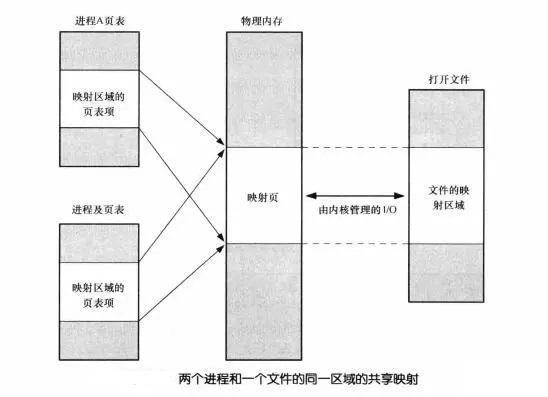
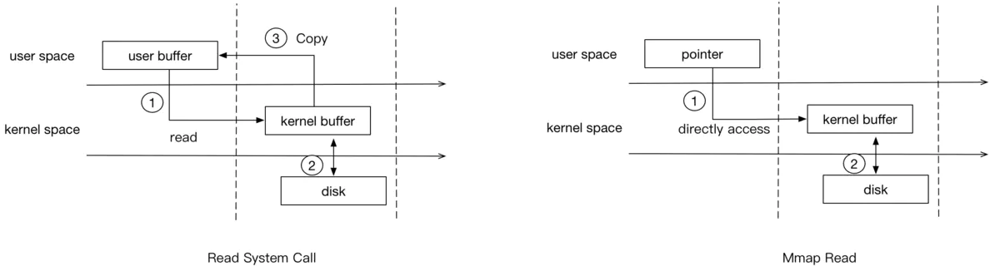
上面左图为传统读写,右图为MMAP.两者相比mmap要比普通的read系统调用少了一次copy的过程。因为read调用，进程是无法直接访问kernel space的，所以在read系统调用返回前，内核需要将数据从内核复制到进程指定的buffer。但mmap之后，进程可以直接访问mmap的数据(page cache)。
SENDFIRL
实现效果与MMAP类似，减少了用户空间和内存空间的上下文切换（数据拷贝）
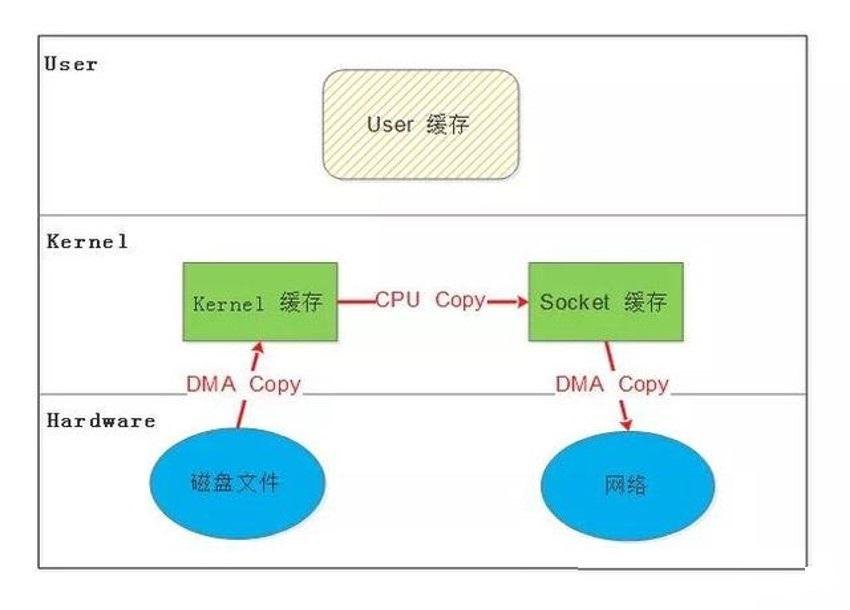
DMA 辅助的 SENDFILE
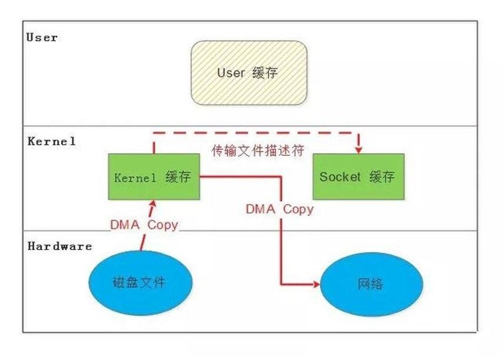
Kernel 到 Sockert 只需要传输文件描述符，而数据直接通过DMA拷贝到网络协议栈。